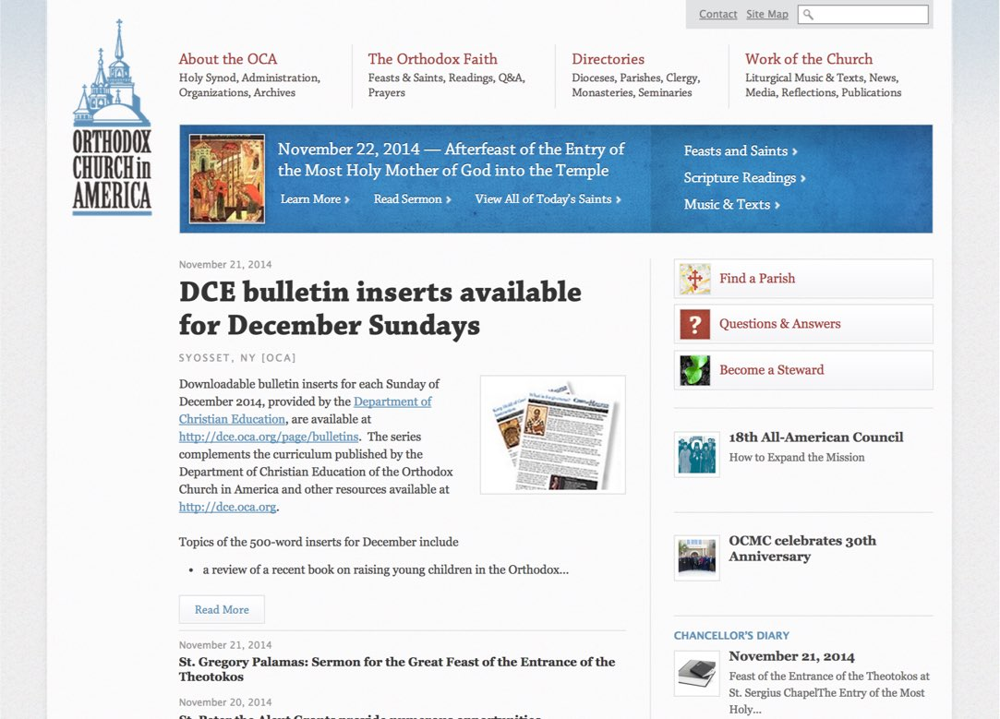
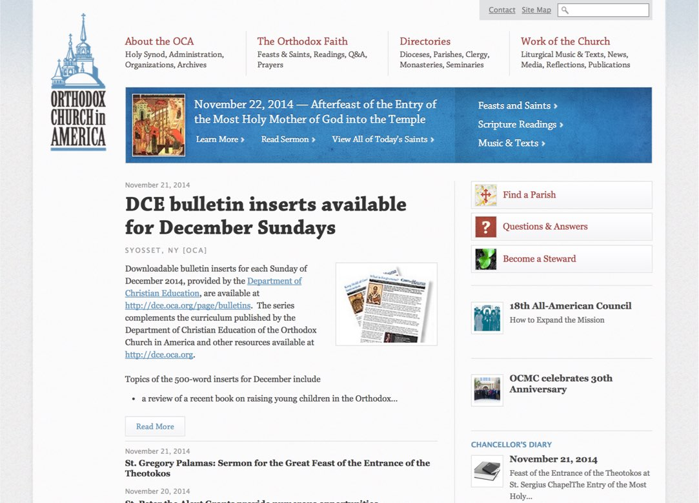

Building on the foundation of interface modules and page systems, the OCA web team continues to thrive without help from us.
Visit OCA.orgOCA.org is an important resource for daily spirituality and a way for the Church to communicate to its members.
 

When designing a site to represent something as important as a person’s faith, it’s critical to design with empathy. And, when working within a large religious organization, it’s also important to know how to manage feedback from internal and external stakeholders.